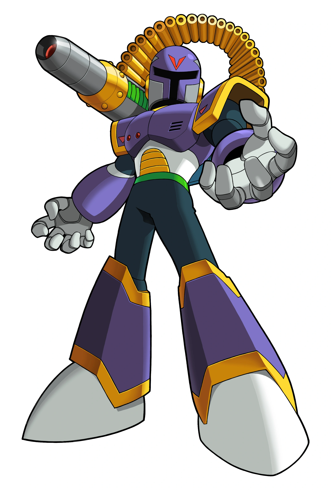

| Imagen | Nombre | Descripcion |
|---|---|---|
|
Mega Man X (X) |
Es un androide que, junto con su compañero Zero y el resto de los Maverick Hunters, protege a los humanos y a los androides basados en su propio diseño conocidos como Reploids de aquellos que se han convertido en una amenaza para la paz, conocidos como Mavericks. X es el personaje pricipal de la misma saga, en donde los juegos de X4 al X8 es donde se puede ser un personaje a seleccionar, tambien cuenta con multiples armaduras para aumentar su poder, en la saga del X al X4 y el X7 la armadura es fija (es decir que solo es una armadura) y en la saga de X5, X6 y X8 la armadura es de su eleccion (en la saga del X8 la armadura se puede combirar en 3 partes distintas). |
|
|
Zero |
Es el co-protagonista de la Saga de Mega Man X, el protagonista principal de la Saga de Mega Man Zero, y también un personaje secundario importante en la Saga de Mega Man ZX como el Biometal Modelo Z. Es el sucesor de Bass y la mayor creación del Doctor Albert W. Wily. Zero es un Maverick Hunter de rango S-A durante el desarrollo de la Saga X, y es considerado como un guerrero legendario en el transcurso de la Saga Zero, siendo un anti-héroe que no teme tomar acciones drásticas cuando sea necesario. Sin embargo, tras su aparente frialdad se esconde una maravillosa y cálida persona. Él es el mejor amigo de Mega Man X. |
|
|
Sigma |
Tambien una vez conocido como "Comandante Sigma", es el villano principal de La Saga de Mega Man X. Asi mismo, sirve como el Jefe Final en casi toda la totalidad de La Saga X, excepto en Mega Man X: Command Mission (donde Sigma no aparece) y Mega Man X8 (donde él es el penúltimo Jefe, pero en Modo Fácil si lo es). Es el primer Reploid creado por el Dr. Cain, fue considerado el mejor de los Reploids y fue el primer líder de los Maverick Hunters; manteniendo la paz entre los Reploids y los humanos al arrestar y cazar Mavericks. A pesar de que una vez fue un prudente y confiable seguidor de la paz, Sigma inesperadamente se vuelve un Maverick antes de los eventos en Mega Man X y se rebela contra la humanidad, tomo el papel del líder de los Mavericks. Bajo el mando de Sigma, los Mavericks se convierten en una legión dedicada a la exterminación de la raza humana. A pesar de que ha sido destruido en innumerables ocasiones, la programación de Sigma siempre sobrevive y se construye a sí mismo un nuevo cuerpo, listo para amenazar al mundo una vez más. Se supone que se vuelve más peligroso y vengativo con cada transformación. Sus enemigos principales son X, Zero y, más recientemente, Axl; manteniendo una rivalidad-neutral-alianza con Vile. |
|
|  |
Vile |
Es uno de los personajes y el antagonista de la Saga de Mega Man X. Él solía ser un Maverick Hunter antes de los acontecimientos del primer juego de Mega Man X y fue catalogado como un Hunter de rango S-A y estaba en la Unidad Élite 17 comandada por Sigma, antes de su rebelión contra la humanidad. Él es el rival auto-proclamado de X, marcado un sinfin de apariciones en el trayecto de la Franquicia siendo solo controlable en Mega Man Maverick Hunter X. |